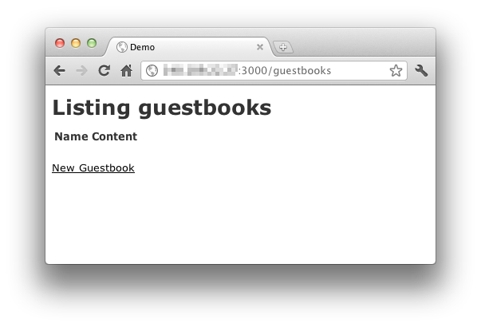
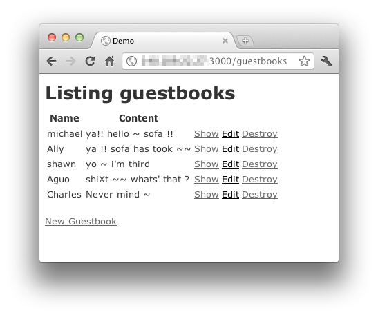
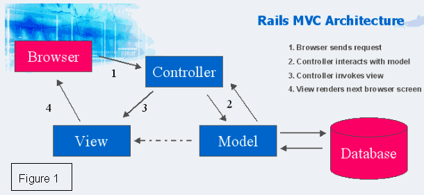
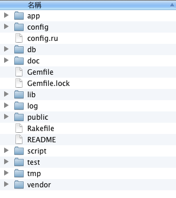

也紀念我們永遠的朋友 李士傑先生（Shih-Chieh Ilya Li）。
麥克阿忠的 Ruby on Rails 特快車－Scaffold 篇
前言
快速網站開發是 Ruby on Rails 的最大特色。雖為網站開發的後起之秀，但在短時間內已被國內外許多知名網站所採用，例如台灣的 T客邦及 Registrano 等。
於前篇文章，筆者介紹 Ruby on Rails 初步環境建置後，本篇將說明如何快速建立擁有新增／刪除／修改基礎功能的範例網站。
快速建立網站基礎模板
讀者可以使用 Ruby on Rails 提供的 "rails" 指令快速建立網站基礎模板。下列指令將建立名為 "demo" 的模板。
$ rails new demo
create
create README
create app/models
create app/views/layouts/application.html.erb
create config
create config/routes.rb
......
......
成功後，切換至上一步驟所產生的 demo 目錄下。
$ cd demo
接下來我們可以使用 Ruby on Rails 提供的 "bundle" 指令，檢查 Rails 的 Gemfile 是否已具備運作基礎環境所需的條件。
$ bundle
如果有發現缺少的套件，" bundle" 會提醒讀者安裝。如下列情形，
Could not find gem 'sqlite3 (>= 0)' in any of the gem sources listed in your Gemfile.
Run `bundle install` to install missing gems.
然後輸入 "bundle install" 開始自動安裝這些缺少的相依性套件。
$bundle install
Fetching source index for https://rubygems.org/
Using rake (0.9.2)
Using abstract (1.0.0)
Using activesupport (3.0.9)
Using builder (2.1.2)
Using i18n (0.5.0)
Installing rack-test (0.5.3) from .gem files at /Users/mikel/Code/app/vendor/cache
Installing rails (3.0.0.beta) from .gem files at /Users/mikel/Code/app/vendor/cache
Using activemodel (3.0.9)
Using erubis (2.6.6)
...
...
...
Using rack (1.2.3)
Using rack-mount (0.6.14)
Your bundle is complete!
使用 "scaffold" 快速建立 CRUD 模板
本篇操作將以「訪客留言板」為範例，利用 "scoffold" 指令快速建構名為 "guestbook" 的模板，且該模板具有兩個資料庫欄位的設計，一為 string 型態的 "name"，另一為 string 型態的 "content"。
$ rails generate scaffold guestbook name:string content:string
invoke active_record
create db/migrate/20110830102544_create_guestbooks.rb
create app/models/guestbook.rb
invoke test_unit
create test/unit/guestbook_test.rb
create test/fixtures/guestbooks.yml
route resources :guestbooks
invoke scaffold_controller
create app/controllers/guestbooks_controller.rb
invoke erb
create app/views/guestbooks
create app/views/guestbooks/index.html.erb
create app/views/guestbooks/edit.html.erb
create app/views/guestbooks/show.html.erb
create app/views/guestbooks/new.html.erb
create app/views/guestbooks/_form.html.erb
invoke test_unit
create test/functional/guestbooks_controller_test.rb
invoke helper
create app/helpers/guestbooks_helper.rb
invoke test_unit
create test/unit/helpers/guestbooks_helper_test.rb
invoke stylesheets
create public/stylesheets/scaffold.css
接著可以使用 "rake" 指令來建立對應的資料庫設計。下列步驟會自動在資料庫中建立名為 "guestbooks" 的資料表，並且包含名為 "name" 的 string 型態欄位，以及名為 "content" 的 string 型態欄位。
$ rake db:migrate
(in /home/myhome/project/demo)
== CreateGuestbooks: migrating ===============================================
-- create_table(:guestbooks)
-> 0.0009s
== CreateGuestbooks: migrated (0.0010s) ======================================
最後，啟動 Rails 網頁應用伺服器。
$ rails server
成功之後，即可開啟瀏覽器，並瀏覽 "https://localhost:3000/guestbooks"。類似的結果如下圖。

▲ 圖1 guestbooks 的網頁呈現
至此已快速完成訪客留言板的基礎功能，並可以嘗試點選網頁中的 "New Guestbook" 來新增資料。

▲ 圖2 在 guestbooks 中新增資料
此外，讀者也可以試著操作 "Show" / "Edit" / "Destroy" 等功能。
"Scaffold" 使得 Rails 能夠快速完成基礎的新增／修改／刪除功能，所以接下來讀者只需要專注於呈現樣式的修改即可。
延伸補充
Scaffold 使用的時機
Scaffold 提供自動產生 Model、Views 和 Controller 程式碼的功能，得以快速完成簡易的 CRUD 功能的模板。雖然如此，但是建立後的程式碼不一定符合各種專案的需求，這也是有經驗的 Rails 程式設計師盡量少用 "scaffold" 的原因。所以並不是任何功能都需要藉助 "scaffold"，讀者仍需視專案需求來活用 "scaffold"。
CRUD
CRUD 指的是 Create、Read、Update、Destroy 四項資料庫基本操作。這些操作分別為：
* Create - 新增資料。
* Read - 讀取資料。
* Update - 更新資料。
* Destroy - 刪除資料。
Rails 的 MCV 架構
Rails MCV 架構如下圖：

▲ 圖3 Rails MVC 架構（圖片來源：https://www.ils.unc.edu/~uskala/MVC.htm；作者為 uskala）
MVC 設計模式是現今網站開發常見的基礎架構。此架構分成三個部分：
* Model：資料與程式功能邏輯層。例如資料庫操作。
* View ：網站頁面呈現層。
* Controller：負責 Model 與 View 的協調與溝通。例如接收到瀏覽器的要求後，可先向 Model 取得資料，再由 View 來整合輸出樣式。
當然，除了 Rails 外，也有許多網站開發框架 (Web Framework) 採用，例如 PHP 的 CakePHP，Python 的 Django。
Rails 的目錄結構
Rails 的目錄結構如下圖：

▲ 圖4 Rails 目錄結構
Rails 會遵循 MCV 的架構來分別管理程式碼與資料的存放位置，並搭配 URL Routing 的概念處理網頁請求。這樣的目錄要求，使得不同功能的程式碼可以依功能分別置於不同的目錄下，而不同的網站元素，如 CSS 及 Javascript，也得以分別管理。如此，整個網站的專案結構將更清晰、更容易掌控。
檔案目錄與用途如下表：
| 檔案/目錄 | 用途 |
|---|---|
| app/ | 放置 Rails 一些 MCV 架構的目錄，底下會有 Controllers、models 和 views 目錄，未來所編寫的程式都會在這個目錄下編輯。 |
| config/ | 整個專案的運作設定檔、網址列的路由規則、資料庫帳號密碼的設定等等。 |
| db/ | 資料庫的結構概要，未來在多人開發的資料庫編修方面，在這裡就會變得很重要。 |
| doc/ | 說明文件放置處。 |
| lib/ | 若有自定的 Module 和類別檔案，放在這裡可以讓每個 controller 都用得到，不必再另外指定路徑 include file。 |
| log/ | 應用程式記錄檔。 |
| public/ | 圖檔、JavaScript、CSS 和其他靜態檔案擺放的地方。 |
| script/ | 執行 Rails 的指令。 |
| test/ | 用來執行臨時測試一些邏輯資料並不影響專案運行。 |
| tmp/ | 放置暫時性的檔案。 |
| vendor/ | 存放第三方外掛的目錄。 |
| Gemfile | 設定 Rails 運作時會使用哪些 Gems 套件，用 bundle install 會依照裡頭的設置來安裝套件。 |
| README | 讀我檔，一般簡要的說明安裝方法。 |
| Rakefile | 載入一些 Rake 自動化處理的任務。 |
| config.ru | 啟動伺服器設定。 |
結語
本篇文章希望讀者對於 Rails 能有初步的認識，而下一篇專文也將為讀者介紹更多 Ruby on Rails 提供的功能。
作者簡介
麥克阿忠，資深網站程式開發者，興趣是攝影。目前擔任 Ruby on Rails 網站開發員，主要使用 Ubuntu Server 進行 Web 應用程式開發。
作者部落格 https://about.me/MichaelChen520
歡迎對 Ruby 有興趣的同好前來交流指教。
You may be interested in the following articles:
- 麥克阿忠的 Ruby on Rails 實務─熟悉 MVC - 2011-11-29
- 麥克阿忠的 Ruby on Rails 真功夫─手刻 CRUD - 2011-10-13
- 麥克阿忠的 Ruby on Rails 初探 - 2011-08-03
Special


Address：No.128, Sec.2, Academia Rd., Institute of Information Science, Academia Sinica, Nangang District, Taipei City 11529, Taiwan (R.O.C).
Privacy Policy. Terms-of-use